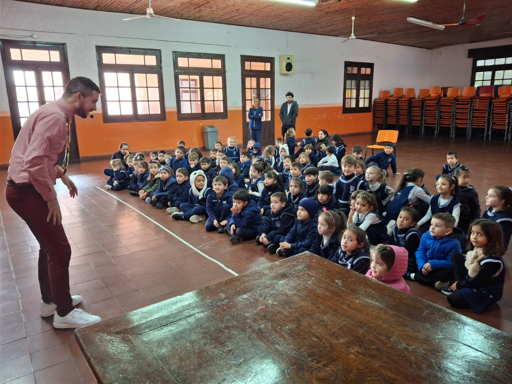

MAGIA DE RECEPCION/ CERCA

Mini show de bienvenida en la mesa de los comensales o en los grupos del evento, es una experiencia cercana, donde la magia sucede a centímetros de los ojos del público y en sus propias manos. Se utilizan objetos comunes como monedas, Cartas, bandas elásticas, entre otros.
Cotizar
MAGIA DE ESCENARIO/ SALON

Un show visual, cargado de humor, chispa y una constante complicidad con el público. Donde las carcajadas y el asombro se mezclan en una experiencia inolvidable. Si buscás diversión, y que el público hable de ese show mucho después de que termine... esta es la propuesta que estabas buscando.
Cotizar
MAGIA INFANTIL

Para los peques, el show no solo debe ser mágico, ¡sino también divertido y cautivador! Por eso, adaptamos cada truco a su nivel, creando un ambiente lleno de interacción, risas y, por supuesto, ¡mucha magia!
Cotizar